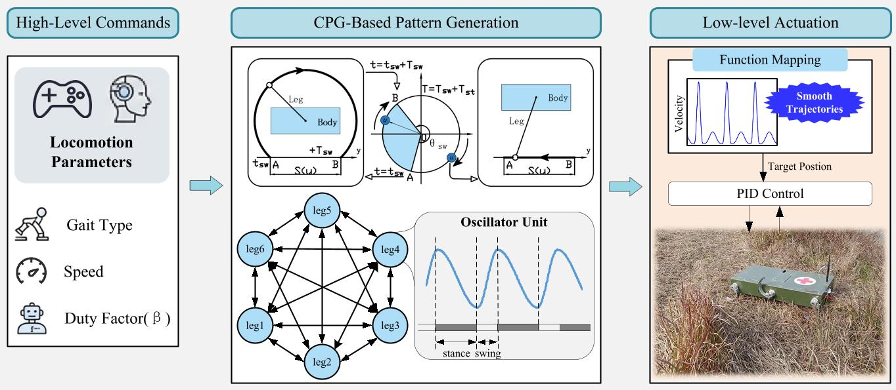

Minimal-DOF legged robots rely heavily on their mechanical compliance, which makes the actuator command profile an important part of the locomotion design. In particular, a piecewise-linear (C0) mapping from oscillator state to actuator position introduces velocity jumps at phase transitions. We present a CPG controller for a jointless hexapod robot that combines a duty-factor-modulated Hopf oscillator with a cyclic C1 trigonometric mapping. The mapping removes the velocity jumps and keeps the commanded acceleration bounded. In fixed-duration Webots trials, it changes forward travel by only 0.21% relative to a cubic Hermite C1 baseline while reducing lateral drift by 51.6%. Physical demonstrations on slopes, gravel, grass, obstacles, and stairs show that the same controller can be used across several terrain conditions.

Wave Gait
Incline
Stairs
Potholed Gravel
Solid Obstacles
Warped Terrain
Irregular Grass
Potholed Gravel
Solid Obstacles
Stair
Warped Terrain
@inproceedings{fu2026continuity,
title = {Continuity-Aware CPG Locomotion Control for a Jointless Hexapod Robot},
author = {Fu, Lequn and Liu, Yibin and Li, Shiqi},
booktitle = {Proc. IEEE Int. Conf. Mechatronics and Automation (ICMA)},
year = {2026},
address = {Changchun, China}
}